To study the behavior of the mild steel rod subjected to a gradual increasing equal loads at 1/3rd span and to determine mechanical properties.
Apparatus used:
Universal Testing Machine, Dial Indicators, Scale and Vernier calipers.
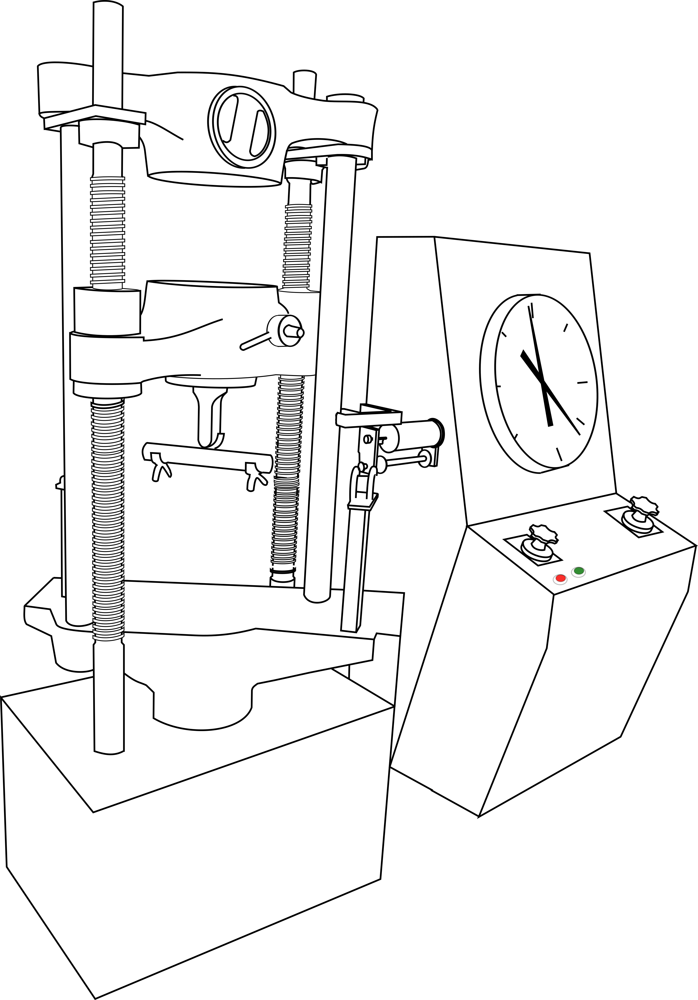
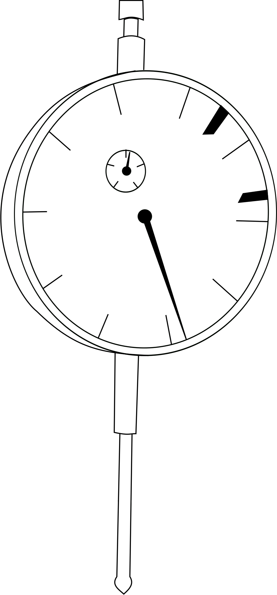
STEP 1
Measure the Initial Diameter of the bending test sample in two perpendicular directions using vernier caliper, calculate the initial area and Moment of Inertia.
Initial Diameter in two perpendicular directions
Average initial diameter di ( mm )
dix ( mm )
diy ( mm )
d1x=
d1y=
Cross sectional area of the specimen =
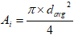
mm2
Moment of Inertia =
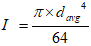
mm4
STEP 2
Measure the length of the specimen using scale keeping the span of the beam as L= 690mm based on the limitation of the experimental setup.
STEP 3
Based on the span of the beam being L= 690mm mark on the test sample Mild Steel rod by using a chalk at the mid-span and one-third loading points where a dial gauge is placed.
STEP 4
Insert the specimen between the special 2-Point loading setup with roller supports which is being fixed on the lower crosshead of the Universal Testing Machine. Adjust all the dial gauges to zero.
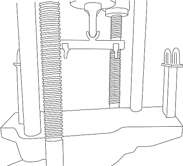
STEP 5
Start the loading process, note down the deflections using dial gauges under mid-span, one-third span.Stop the experiment once the specimen has been yielded.
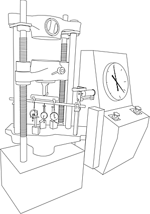
Click on green button to start the loading process
Click on red button to stop the loading process
Total load (kg)
Dial indicator readings at mid-span (div)
Dial indicator readings at 1/3rd span points (div)
Point A
Point B
Average
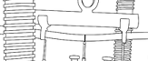
STEP 6
Once the yield limit is crossed, the specimen Mild Steel rod will have a permanent bend or deformation as it has crossed the elastic limit.
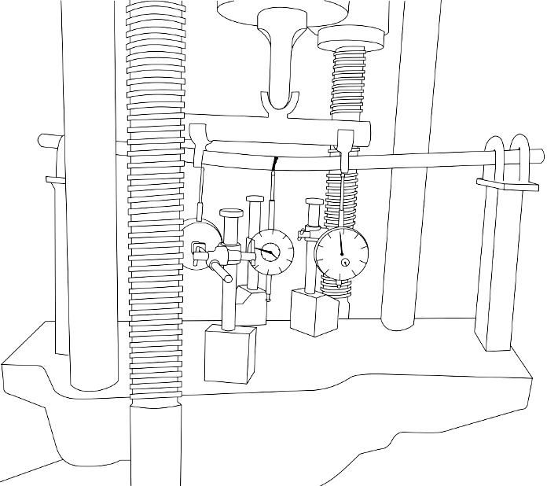
STEP 7
Plot load vs deformation at mid-span
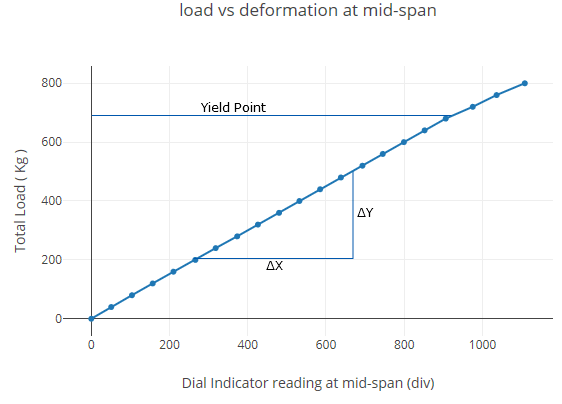
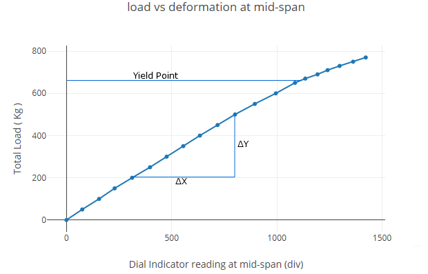
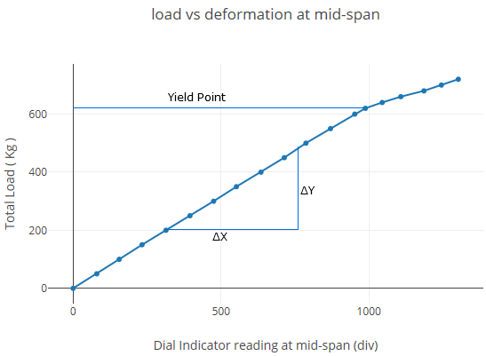
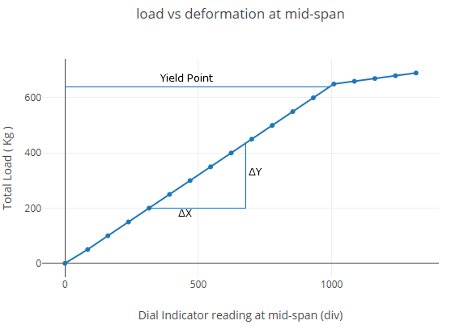
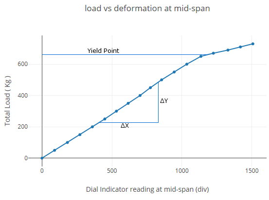
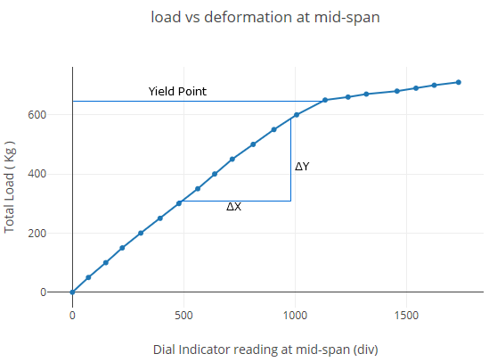
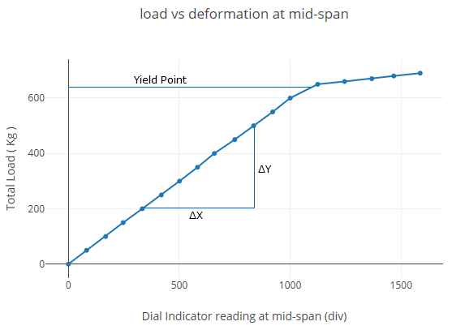
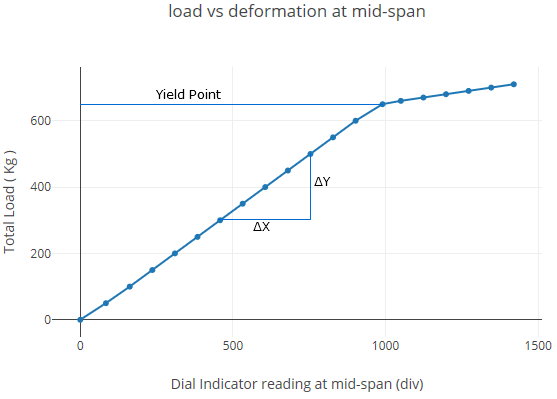
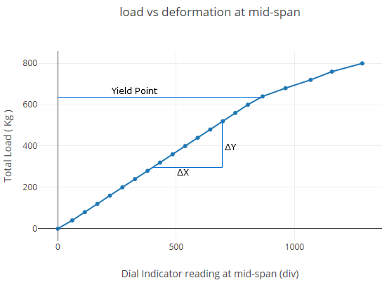
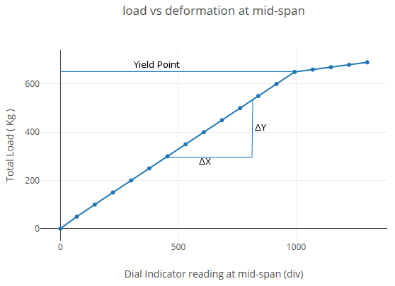
Total load (kg)
Dial indicator readings at mid-span (div)
Dial indicator readings at 1/3rd span points (div)
Point A
Point B
Average
STEP 8
Plot theoretical deflection at one-third span vs average experimental deflection at one-third span within elastic limit.
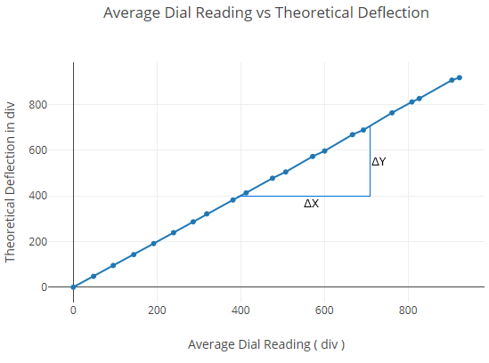
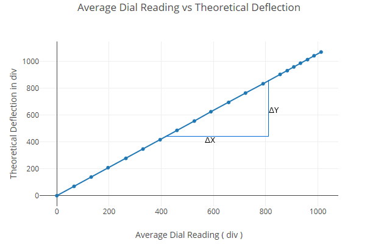
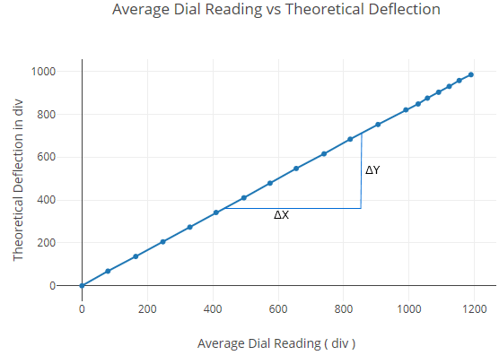
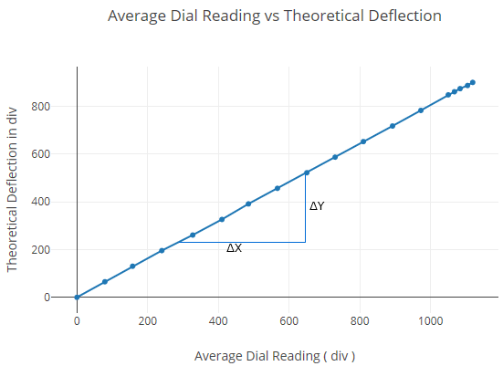
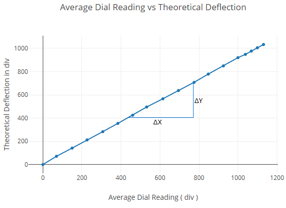
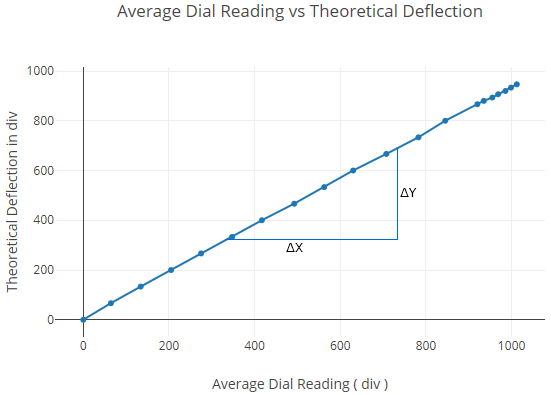
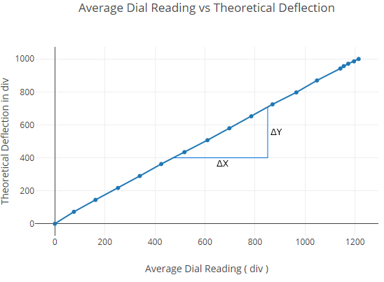
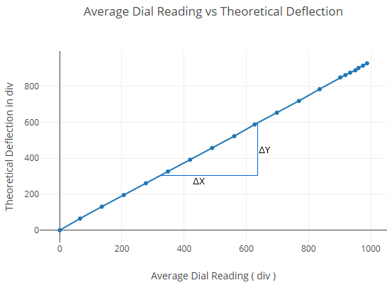
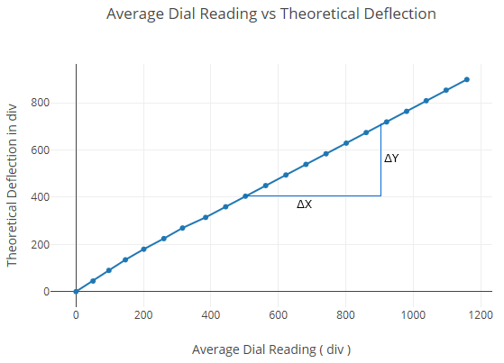
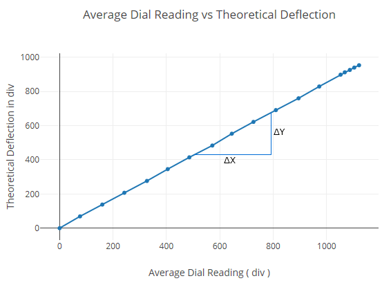
Total load (kg)
Dial indicator readings at mid-span (div)
Dial indicator readings at 1/3rd span points (div)
Point A
Point B
Average
Observations :
Diameter of the Specimen, D ( mm )
Span of the Beam, L ( mm )
690
Slope of Load-deflection plot (N/mm)
Moment of Inertia about the neutral axis, I ( mm4 )
I = π × d4⁄64
Stress at yield point ( MPa )
Stress = M × Y⁄I
Modulus of elasticity, E ( GPa )
E = 23 × L3 × slope × 9.81 ⁄1296 × I
Entered Values
Correct Values
Moment of Inertia about the neutral axis, I ( mm4 )


 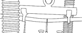
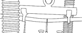